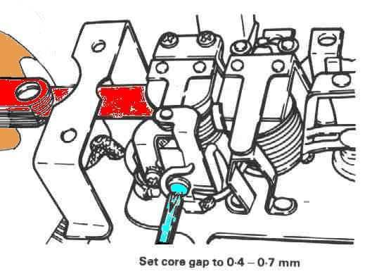

You fit a new bulb and it fails again after days or weeks, or several bulbs fail one after another. Bulbs do wear out, but repeated failure has a cause. The two big ones are too much voltage (a faulty regulator, a bad battery connection, or riding with no battery), and vibration (a loose headlight or bracket, or a cheap bulb). Fitting the wrong bulb, or touching the glass of a halogen bulb, also shortens life.
Is it safe to ride?
With care. Carry a spare bulb. If the cause is high voltage, the battery can also overheat and swell: check it soon, and stop riding if it smells, hisses or bulges.
Quick checks first
- Which bulbs fail: only the headlight, or many lamps? Many lamps points to voltage.
- Are the battery terminals tight and clean? A loose battery cable lets the voltage jump.
- Has the bike been ridden with the battery removed or flat? Some systems give high voltage spikes without a battery to smooth them.
- Is the headlight shell or bracket loose? Shake it.
- Is the bulb the correct type and wattage, from a known brand?
- Has anyone touched the glass of a halogen bulb? (The K-Light manual warns against this, PDF p. 68.)
Diagnose it step by step
1. Are the battery connections tight and the battery healthy? The K-Light fault chart starts here: poor battery contact and a weak or sulphated battery (PDF p. 42).
- Loose or corroded: Clean and tighten battery terminals.
- Battery old or fails a test: Test and charge a 12 V battery.
- Good: go to step 2.
2. Is the charging voltage too high? Set the multimeter to DC volts (V with a straight line), 20 V range. Red probe on battery positive, black probe on battery negative. Start the engine and raise the revs slowly while you watch the reading.
- The reading should rise, then level off. K-Light 125: 14.5 ± 0.5 V at 5000 rpm (PDF p. 78). Other bikes: use the value in your manual.
- It keeps rising with revs, or goes above the limit: the regulator is faulty. Go to Battery overcharges and bulbs blow and Test the regulator rectifier.
- It jumps up and down: check the regulator connector and earth first, then the regulator.
- Steady and correct: go to step 3.
3. Is the regulator well earthed and its connector clean? A regulator with a poor earth cannot hold the voltage down. Check its plug for burnt pins and its mounting bolts and earth wire for rust. The K-Light regulator test is on PDF p. 79.
- Poor: Clean and tighten earth connections and see Regulator is very hot or the connector has melted.
- Good: go to step 4.
4. Does the failing lamp shake? With the engine at idle, look at the lamp. Press on the headlight shell and bracket.
- It moves or rattles: tighten or replace its rubber mounts and bolts: Check chassis fasteners.
- Solid: go to step 5.
5. Is the bulb correct and handled properly? Compare it with the manual and the lamp's marking. Fit a quality bulb, held by its base only: Replace a bulb.
- If bulbs still fail with correct voltage and a solid mount, check the bulb holder for a weak contact that heats and arcs: replace the holder.
What happens if you ignore it? High voltage boils and swells the battery, can damage the ECU, dashboard and LED units, and can melt connectors.
Causes, most likely first
| Cause | How to confirm | Fix |
|---|---|---|
| Loose or corroded battery terminal | Terminal moves, voltage jumps | Clean and tighten battery terminals |
| Faulty regulator (overcharging) | Voltage too high at revs | Test the regulator rectifier |
| Weak or failed battery | Fails test | Test and charge a 12 V battery |
| Regulator earth or connector poor | Burnt pins, rust | Clean and tighten earth connections |
| Vibration from loose lamp | Lamp moves at idle | Check chassis fasteners |
| Wrong or poor-quality bulb, glass touched | Visual, label | Replace a bulb |
| No regulator on a bike with no battery | Bulbs blow only at high revs | Fit a suitable regulator for that system; use the value in your bike's manual |
Reference values (K-Light 125)
| Item | Value | Source |
|---|---|---|
| Charging voltage | 14.5 ± 0.5 V at 5000 rpm | PDF p. 78 |